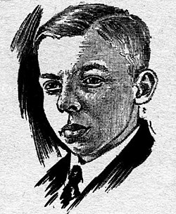

Ray Palmer
Magazine editor, 1910 to 1977

The editor of Amazing Stories who promoted Richard Shaver's tales of an evil underground race, and in 1947 claimed the new flying saucer sightings proved them true. Associates disagreed over whether he believed it or pushed it to sell magazines. 1
He paid Kenneth Arnold to investigate the Maury Island story, which proved a hoax, and went on to publish Fate and Flying Saucers magazines, helping launch the flying saucer and New Age movements. 1
Open in the interactive Watcher
Related
Sources
- Raymond A. Palmer Wikipedia